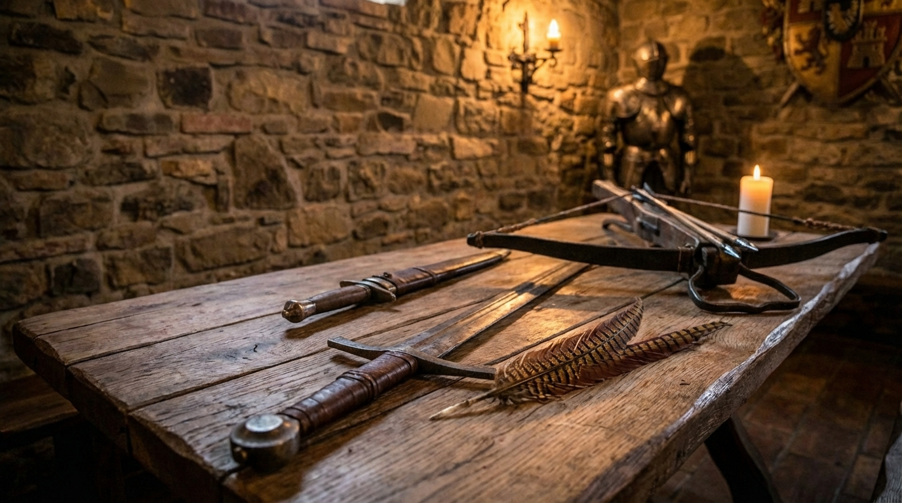
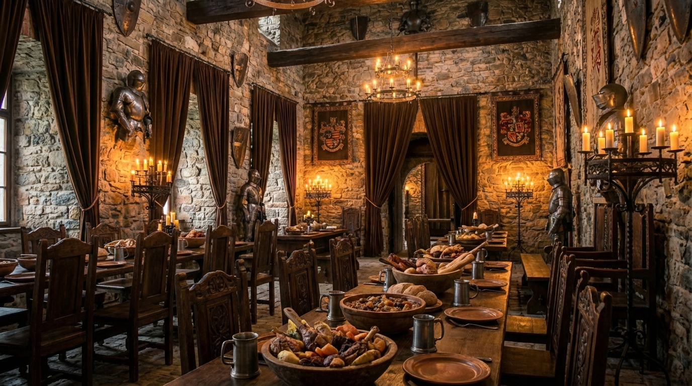
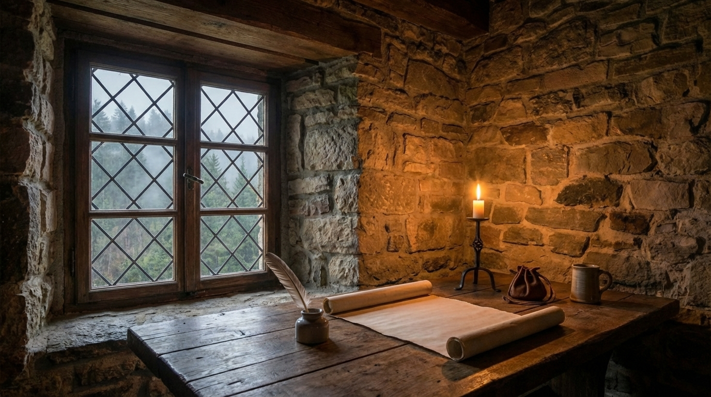

Vándor Kamra
Egyszerű, de nemes szállás a gyorsan továbbállóknak. Tömörfa ágy és kandalló.
- Tömörfa ágy
- Parasztos reggeli (szalonna, hagyma, friss kenyér)
- 1 korsó kézműves serital érkezéskor
24 900 Ft / éj

Lovagi terem
Tágas terek, medvebőr (mű) szőnyeg, privát olvasósarok a toronyban.
- 2 éjszaka a Lovagi Teremben
- Királyi bőségtálas vacsora (3 fogás)
- Ingyenes belépés a Fürdőházba
- Pince-túra a Pincemesterrel
39 900 Ft / éj

Királyi Lakosztály
A legnemesebb választás. Hatalmas baldachinos ágy és privát dézsafürdő.
- 2 éjszaka a Királyi Lakosztályban
- Mézbor és gyümölcstál bekészítés
- Késői kijelentkezés (amikor a Nap delelőre ér)
29 900 Ft / éj

A Vadász Trófeája
Azoknak, akik nem csak henyélni jöttek. Célbalövés a hátsó udvarban, este pedig a "zsákmány" megsütése a nyílt tűzön.
- 2 éjszaka a Vándor Kamrában
- 2 óra íjászat és balta-hajítás (oktatással)
- Egészben sült csülök vacsora korsó sörrel
85.000 Ft / éj

A Klán Gyűlése
Hozza el az egész pereputtyot. Tágas szállás, ahol az apródok sem unatkoznak, amíg az uraságok a bort kóstolják.
- 2 éjszaka összenyitható kamrákban
- Közös üstből mért, bőséges családi lakoma
- Kincskeresés a birtokon a gyermekeknek
79.900 Ft / éj

A Száműzött Menedéke
Amikor elege van a királyi udvar (vagy az iroda) intrikáiból. Egy teljes hetes elvonulás teljes ellátással és diszkrécióval.
- 7 éjszaka elzárt szállás
- Napi háromszori étkezés, csendben felszolgálva
- Garantáltan nem kérdezzük meg, kicsoda Ön
120.000 Ft / éj